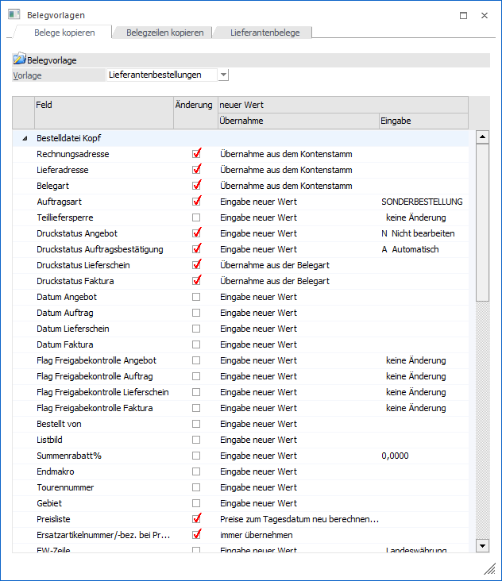

Über den Menüpunkt…
1 WinLine FAKT
1 Stammdaten
1 Belegstammdaten
1 Belegvorlagen
… oder den Button "Vorlagen" im Fenster "Belege kopieren" können Vorlagen für das Kopieren von Belegen und von Belegzeilen definiert werden.
ü Register "Belege
kopieren"
Durch hier definierte Vorlagen besteht die Möglichkeit, beim
Kopieren von Belegen Werte aus der "Bestelldatei Kopf", sowie aus der
"Bestelldatei Mitte" bereits vorzudefinieren. D.h. die Werte nicht aus dem
Basisbeleg zu verwenden, sondern eben jene, die in der Belegvorlage angegeben
wurden.
ü Register "Belegzeilen
kopieren"
Wenn eine neue Artikelzeile per Tabellenbutton "Belegzeile
einfügen" oder via Drag & Drop in einen Beleg eingefügt wird, so kann diese
Kopie durch hier definierte Vorlagen beeinflusst werden. Welche Vorlage gilt,
wird mit Hilfe der Belegart des Zielbelegs (WinLine FAKT - Stammdaten -
Belegstammdaten - Belegarten - Register "Ausdruck" - Feld "Zeilen kopieren")
festgelegt.
ü Register
"Lieferantenbelege"
Wurden die Daten im Programm "Bestellvorschlag
bearbeiten" per Drag & Drop oder über die Funktion "Belegzeilen kopieren /
Belegzeilen einfügen" (Quelle "Belege / Belege - Matchcode" oder
"Belegkurzinfo") erzeugt, so besteht eine logische Verbindung zwischen Quell-
und Bestellvorschlagszeile. Auf diese kann im "Lieferantenbelege erstellen"
zugriffen werden (Bereich "Lieferantenbelege erzeugen", Feld "Belegvorlage"),
wobei die Art und Weise in der hier zu definierenden Lieferantenbelegvorlage
angegeben wird.
Hinweis
Sollten bei der Erstellung Daten unterschiedlicher Quellbelege in einem Lieferantenbeleg münden, so werden die Belegkopfinformationen aus dem ersten Artikel zur Abarbeitung des Bereich "Bestelldatei Kopf" verwendet.

Ø Vorlage
An dieser Stelle kann eine bestehende Vorlage aus der Auswahlliste gewählt und per Taste "Enter" geladen werden. Die Anlage von Belegvorlagen erfolgt durch die Eingabe eines noch nicht bestehenden Namens.
Tabelle "Vorbelegungen"
In der Tabelle stehen die folgenden Spalten zur Verfügung:
Ø Feld
In dieser Spalte werden die zu definierenden Felder aufgelistet.
Ø Änderung
Wird die Option "Änderung" aktiviert, so wird der geänderte Wert (siehe Spalten "Übernahme" und "Eingabe") in den kopierten Beleg / die kopierte Belegzeile übernommen. Ansonsten wird der Wert aus dem Basisbeleg / Quellartikel verwendet.
Ø neuer Wert (Übernahme / Eingabe)
Aus der Auswahlliste "Übernahme" kann entschieden werden, ob ein neuer Wert fix eingegeben werden soll (Auswahl "Eingabe neuer Wert") oder ob der Wert bewusst aus dem Basisbeleg bzw. dem Stamm übernommen werden soll (Auswahl "Übernahme…").
ü Eingabe neuer Wert
Wird diese
Option gewählt, so kann ein neuer Wert eingegeben bzw. aus einer Auswahlliste
ausgewählt werden.
ü Übernahme…
Bei der Übernahme
aus dem Basisbeleg bzw. dem Stamm stehen abhängig von dem Feld und der
Vorlagenart (Belege kopieren / Belegzeilen kopieren) die Varianten "Übernahme
aus dem Kontenstamm", "Übernahme aus dem Basisbeleg" und "Übernahme aus
Belegart" zur Verfügung.
Felder mit Sonderfunktionen
Die folgenden Felder bieten Sonderfunktionen bzw. spezielle Programmautomatiken an:
Ø Allgemein - Belegart / Lieferadresse / Projektnummer (Bestelldatei Kopf)
Es steht zusätzlich die Auswahl "Übernahme aus dem Basisbeleg" zur Verfügung. Voraussetzung dafür, dass diese Funktion auf die Lieferadresse Anwendung finden kann ist, dass als Hauptkonto für Belege die Rechnungsadresse verwendet wird.
Ø Preisliste (Bestelldatei Kopf)
Mit Hilfe dieses Felds kann die Preisliste des Zielbelegs umgestellt und / oder Preise neu berechnet werden (die Neuberechnung gilt auch für kopierte Belegzeilen). Was im Detail durchgeführt werden soll, wird über die Auswahlliste unter "Übernahme" definiert.
ü Eingabe neuer Wert
Bei dieser
Option kann im Feld "Eingabe" eine neue Preisliste hinterlegt werden. Zusätzlich
findet automatisch eine Preisfindung statt, d.h. alle Artikel des Belegs
erhalten aufgrund der (neuen) Preisliste ggfs. aktualisierte Preise.
ü Übernahme aus dem
Kontenstamm
Wird die Option "Übernahme aus dem Kontenstamm" gewählt, so kann
kein neuer Wert eingetragen werden, da der Wert aus dem jeweiligen Personenkonto
des Zielbeleges genommen wird. Zusätzlich findet automatisch eine Preisfindung
statt, d.h. alle Artikel des Belegs erhalten aufgrund der (neuen) Preisliste
ggfs. aktualisierte Preise.
ü Preise neu berechnen
Wenn die
Option "Preise neu berechnen" gewählt wird, so kann kein neuer Wert eingetragen
werden. Es findet ausschließlich eine Neuberechnung der Preise (aufgrund der
Preisliste des Zielbelegs und zum Belegdatum) statt.
ü Preise zum Tagesdatum neu
berechnen
Wenn die Option "Preise zum Tagesdatum neu berechnen" gewählt wird,
so kann kein neuer Wert eingetragen werden. Es findet ausschließlich eine
Neuberechnung der Preise (aufgrund der Preisliste des Zielbelegs und zum
Tagesdatum) statt.
ü Preise ohne Rabatt neu
berechnen
Wenn die Option "Preise ohne Rabatt neu berechnen" gewählt wird, so
kann kein neuer Wert eingetragen werden. Es findet ausschließlich eine
Neuberechnung der Preise (aufgrund der Preisliste des Zielbelegs und zum
Belegdatum) statt. Hierbei werden die Zeilenrabatte nicht berücksichtigt. D.h.
Zeilenrabatte, die in dem Beleg /der Belegzeile vorhanden (oder eben nicht
vorhanden) sind, werden dadurch nicht verändert.
Ø Ersatzartikelnummer/-bez. bei Preisfindung (Bestelldatei Kopf)
Mit Hilfe dieses Felds kann die Ersatzartikelnummer und die Ersatzartikelbezeichnung der Belegzeile angepasst werden. Dieses ist allerdings nur dann möglich, wenn die Preisliste ebenfalls geändert wird (siehe Feld "Preisliste"), da die Daten (Nummer und Bezeichnung) aus dem gefundenen Preislisteneintrag stammen. Was im Detail durchgeführt werden soll, wird über die Auswahlliste unter "Übernahme" definiert.
ü nie übernehmen
Die
Ersatzartikelnummer und -bezeichnung wird nicht geändert, d.h. die Einträge
bleiben so erhalten wie sie waren.
ü immer übernehmen
Die
Ersatzartikelnummer und -bezeichnung wird aus dem gefundenen Preislisteneintrag
übernommen.
Hinweis
Wenn die Felder in dem Preislisteneintrag nicht gefüllt sind, so werden (wie in der Belegerfassung üblich) die normale Artikelnummer und -bezeichnung übernommen.
ü nur übernehmen wenn nicht
gefüllt
Nur wenn die Ersatzartikelnummer oder -bezeichnung in der Belegzeile
nicht gefüllt ist, wird der Werte aus der Preisliste übernommen (wenn dort
vorhanden).
Hinweis
Bei bereits gerechneten Lieferantenlieferscheinen, Lieferantenfakturen und Kundenfakturen können die Preise und somit auch die Ersatzartikelnummer und -bezeichnung nicht mehr umgestellt werden.
Ø FW-Zeile (Bestelldatei Kopf)
Mit Hilfe dieses Felds kann eine Umstellung der Fremdwährung im Belegkopf und Umrechnung der Preise auf die neue Währung erflogen. Stellt man auf eine Fremdwährung um, welche mehrere Einträge in der Fremdwährungshistorie hat, so wird immer mit dem Datum nach letzten Kurs umgerechnet.
Ø Projektnummer (Bestelldatei Kopf)
Durch Aktivierung dieses Felds kann die Projektnummer im Belegkopf geändert werden. Hierbei wird auch gleichzeitig die Projektnummer in der Belegmitte geändert!
Ø Valutadatum (Bestelldatei Kopf)
Durch Aktivieren dieses Felds kann das Valutadatum für den Zielbeleg definiert werden. D.h. wird die Option aktiviert, kann im Feld "Eingabe" ein Valutadatum angegeben werden (dieses wird in den neuen Beleg kopiert). Wird die Option aktiviert und das Feld "Eingabe" bleibt leer, so bleibt dieses Datum auch im umzustellenden Beleg leer.
Ø Buchungsstapel (Bestelldatei Kopf)
An dieser Stelle kann der Buchungsstapel angepasst werden. Für eine fixe Vorgabe stehen die angelegten Faktstapel und die Einstellung "0 - Periodenstapel" zur Verfügung.
Hinweis
Das Feld "Buchungsstapel" steht in den Belegvorlagen nur zur Verfügung, wenn in den Applikationsparametern (FAKT-Parameter - Belege - Erweiterte Optionen) die abweichenden Faktstapel aktiviert wurden.
Ø Handelsstückliste (Bestelldatei Mitte)
Es stehen zwei Optionen unter "Übernahme" zur Verfügung:
ü Stückliste neu erzeugen
Mit
dieser Option wird die Handelsstückliste neu aus dem Stamm erzeugt und der
Einstandspreis entsprechend neuberechnet. Alle manuellen Änderungen in der
vorhandenen Handelsstückliste des Basisbelegs werden dadurch verworfen (d.h.,
eine Initialisierung mit den Daten aus dem HSL-Stamm wird ausgeführt).
ü Einstandspreis
aktualisieren
Mit dieser Option wird nur der Einstandspreis des HSL-Artikels
aus der Summe der Komponenten neu berechnet und in den Beleg geschrieben.
Ø Produktionsauftrag kopieren (Bestelldatei Mitte)
Wenn ein Beleg kopiert wird, welcher eine Produktionsstückliste enthält, dann wird bei aktivierter Option die Produktionsstückliste 1 zu 1 kopiert und nicht beim Bearbeiten des Beleges aus der Stückliste neu erzeugt.
Hinweis
Bei auftragsbezogenen Produktionsartikel, bei denen das Stücklistenfenster geöffnet werden soll, wird die Dispositionszeile "wird produziert" nicht gebildet.
Ø Zeilenformel ausführen (Bestelldatei Mitte)
Mit der Option "Zeilenformel ausführen" wird eine eventuell vorhandene Zeilenformel ausgeführt.
Ø Versandregel aktualisieren (Bestelldatei Mitte)
Mit Hilfe dieser Option wird aus den Einstellungen des Collistamms und der Versandart (Belegkopftexte) die Versandregel aktualisiert.
Ø Lagerorte kopieren
Durch Aktivierung dieser Option werden auch die Lagerorte des Basisbelegs / der zu kopierenden Belegzeile übertragen, wobei die Lagerortfunktionen des Zielbelegs berücksichtigt werden. D.h. es werden nur all jene Lagerorterfassungen kopiert, welche zur Lagerortfunktion(en) gemäß Belegart des Zielbelegs passend sind!
Hinweis
Bei dem Kopiervorgang werden die aktuell vorhandenen Lagerort-Zuordnungen und die Lagerorteigenschaften des Artikels nicht geprüft.
Buttons
Ø Ok
Durch Anwahl des Buttons "Ok" bzw. der Taste F5 werden die Änderungen gespeichert bzw. die neue Belegvorlage erzeugt.
Ø Ende
Durch Drücken des Buttons "Ende" bzw. der Taste ESC wird das Fenster geschlossen und alle nicht gespeicherten Eingaben verworfen.
Ø Löschen
Mit dem Button "Löschen" können bestehende Vorlagen gelöscht werden.